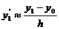
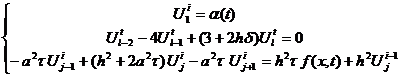
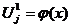

Аппроксимацию уравнения будем проводить по неявной схеме.

Аппроксимация с помощью левых разностей:
Для аппроксимации производной в краевом условии применяем формулу:

Получаем:

Такая аппроксимация имеет второй порядок погрешности по h и первый порядок по τ
Разностная схема принимает вид:
Начальные условия:
После преобразования матрица этой системы становится трёхдиагональной. Системы уравнений с такими матрицами удобно решать методом прогонки. Преимущества этого метода ещё и в том, что он точный и количество операций в нём линейно зависит от числа уравнений, следовательно, накапливаемая ошибка мала.
Входными данными будут функции α(t), φ(х), f(x,t), а так же значения параметров. Ещё сюда входят интервалы по времени и по х.
Выходные данные - это значения функции U в узлах сетки.